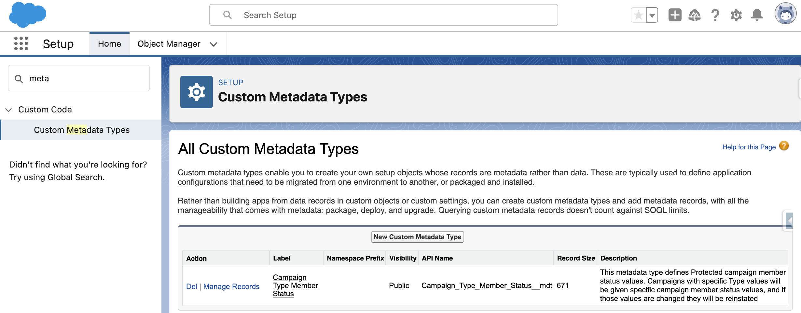

This code was developed for Marketing Admins who want to automate and enforce the Campaign Member Status options for Campaigns of certain
types. It was originally written by
Sercante LLC
.
This application is designed to run on the Salesforce Platform
We go through all the effort of setting up beautiful Salesforce Campaigns, naming standards and maybe even a hierarchy. The next challenge
in completing your beautiful work of campaign art is getting a hold on your Campaign Member Statuses for each campaign.
When a new Salesforce Campaign is created, many people aren't just happy with the two default statuses of Sent and Responded. This
prompts them to create what they think makes the most sense. Though as time goes on and as reporting starts to be needed, everyone making
their own Campaign Member Statuses can be a nightmare that prevents you from getting meaningful and actionable intelligence. It would be
really nice to take the guesswork out of status reporting and have a standard set of Campaign Member Statuses everyone uses consistently.
Jenna Molby posted a
fantastic solution
that enables you to automatically create the right Statuses on Campaign creation. The automation here is good, though as you increase the
number of Types the Flow could become a bit unwieldy.
Another thing that could be a problem comes later when other people might make changes to your carefully crafted structure. What happens
if someone edits or even removes these statuses?
This code was developed for Marketing Admins who want to automate and enforce the Campaign Member Status options for Campaigns of certain
types. It was originally written by Sercante LLC (
https://github.com/sercante-llc/protected-campaign-statuses
).
Campaign Type Member Statuses
Campaign Type Member Statuses is a solution to solve this problem of automating (and enforcing) Campaign Member Statuses by Type. It
allows you to:
Define the Campaign Member Statuses that should always be present on given Campaign Types.
Restore the Protected Statuses on Active Campaigns should someone make changes.
Create additional Statuses for specific reasons.
Override by authorized users on a per-Campaign basis.
Installation Instructions
What You Get
When deploying this package to your org, you will get:
1 Custom Metadata Type (and page layout)
1 Campaign Custom Field
1 ChangeDataCapture configuration
2 Apex Triggers
5 Production Apex Classes
4 Apex Test Classes
Get started
If you install only the core code via install button or the package, then you will not have any triggers installed.
Deploy the main directory if you install from this repository. AppExchange installations (on roadmap) skip to step 2.
sf project deploy start --source-dir force-app
You need to update your existing handlers or create new ones for the following objects and contexts.
Log in to Salesforce, and go to Setup. Or create/update the triggers with the IDE of your choice:
Object
Context
Apex code
CampaignMemberStatusChangeEvent
after insert
new CMS_MemberStatusEventTriggerHandler().afterInsert();
/**
* @description Trigger on `Campaign` with methods to call - change this to avoid logic in the trigger
*/
trigger CampaignTrigger on Campaign(before insert, after insert, before update) { //NOPMD
System.TriggerOperation triggerEvent = Trigger.operationType;
switch on triggerEvent {
when AFTER_INSERT {
new CMS_CampaignTriggerHandler().afterInsert();
}
when BEFORE_INSERT {
new CMS_CampaignTriggerHandler().beforeInsert();
}
when BEFORE_UPDATE {
new CMS_CampaignTriggerHandler().beforeUpdate();
}
}
}
CampaignMemberStatusEvent trigger
/**
* @description Trigger on `CampaignMemberStatusChangeEvent` with methods to call
*/
trigger CampaignMemberStatusEventTrigger on CampaignMemberStatusChangeEvent(after insert) {
new CMS_MemberStatusEventTriggerHandler().afterInsert();
}
Next, you need to define your Protected Statuses. This is done with Custom Metadata Types.
Log in to Salesforce, and go to Setup.
Navigate to Custom Metadata Types, and click Manage Records for Campaign Type Member Status.

To create your first ones, click New
Fill in the various fields.
Label
: Used in the List of Campaign Statuses in the Setup view in step 3 above. Recommended convention: TYPE-STATUS
Name
: This is an API name that can be used by developers. Not required by this package. Recommended: let this autofill after you type
in the Label.
Campaign Type
: This is the actual value for the Campaign's Type field.
Protected Status
: This is the Status value that will become protected.
Is Default
: Select this if this Status should be the default (please pick only 1 per Type).
Is Responded
: Select this if this Status should be marked as Responded.
When complete, your screen may look something like this:
Click
Save
(or
Save & New
) and repeat a whole bunch.
Lastly, time to set up a scheduled job to restore deleted protected statuses.
Back in Setup, go to Apex Classes and click
Schedule Apex
.
Fill in the few fields.
Job Name
: give this a nice descriptive name so you remember what it is in 3 months.
Apex Class
: CampaignMemberStatusJob
Frequency
: set this to what works for you. We recommend running this daily during off-peak hours.
Start
: today
End
: some time in the distant future
Preferred Start Time
: off peak hours
When complete, your screen may look something like this:
You are good to go once you have provided your statuses. Give it a whirl by creating a new Campaign with the Type you have set up. Then
take a look at the statuses already created.
Campaigns with Types not already set up will keep the default two statuses that Salesforce creates.
There's no need to add the new checkbox field on Campaign to page layouts, but if you want to, it's best to make it read-only.
Quick Install
Deploy this repository metadata directly to your org, avoiding the need to use the command line:
Pushing Code to a Sandbox
Follow this set of instructions if you want to deploy the solution into your org without using an Unlocked Package. This will require a
Sandbox, and then a ChangeSet to deploy into Production.
If you know about and use
git
, clone this repository
git clone https://github.com/dschach/campaign-member-status.git
cd campaign-member-status
Custom Metadata Types: Allows the Protected Statuses to be treated like normal Salesforce metadata and can be deployed around like any
other metadata (changesets, insert devops tool here)
Campaign Custom Field:
Campaign.Has_Protected_Campaign_Member_Statuses__c
is automatically checked by the solution if a Campaign is created and there are Custom Metadata Type records that specify this
Campaign's Type. It is also what allows the rest of the code to keep the statuses intact. You can clear the checkbox for this field
to make changes to the statuses if you need to. However, you can't enable protection afterwards.
Change Data Capture: We turn this on for CampaignMemberStatus so we can detect edits to statuses and then fix the records
after-the-fact. Sadly we can't (yet?) put any triggers on CampaignMemberStatus (which would have been ideal).
Triggers: We use them to kick off the automation that we've built when a Campaign is created. We also use them to watch for Campaign
Member Status edits (through the ChangeEvents from Change Data Capture) so we can set things right afterwardsd.
How it Works
Once everything is set up, Campaigns should maintain a consistent set of Campaign Member Statuses. Here's how we accomplish that.
New Campaign Created
When a new Campaign is created, we check to see if the Type of Campaign is defined in any of the Protected Campaign Member Status records
(the Custom Metadata Type that was set up earlier). If there is a match, the solution will:
Automatically add a checkbox to the Campaign Custom Field "Has Campaign Type Member Statuses".
Automatically adjust the CampaignMemberStatus records to match all Campaign Type Member Statuses expected
Editing a Campaign Type Member Status
For a Campaign that "Has Campaign Type Member Statuses", when one of the CampaignMemberStatus records is edited we will double
check all statuses of that Campaign to make sure that all Protected ones still exist. If there are any missing, they will be recreated
almost instantly (you may need to refresh the page for them to show up if there's a delay).
Removing a Campaign Type Member Status
If a user removes a Campaign Type Member Status, the Scheduled Job (that was created as part of
Post-Install Configuration
) will search for Campaigns missing a Status and recreate it.
FAQ
Do you have any suggested statuses?
Of course! Here are a few to get your creative juices flowing.
Why Don't you just prevent people from messing around with Protected Statuses?
We really wish we could. A "before update" and "before delete" Apex Trigger would be the simplest way to handle this.
Unfortunately, Apex Triggers are not (yet) possible on CampaignMemberStatus records, so we end up having to fix it after-the-fact.
I get Apex test errors after deploying the code. How can I fix them?
If you have Apex tests which set up a Campaign record as part of the test, the functionality in this package will get called and might
blow up. This is because how Salesforce internally treats the automatic generation of Campaign Member Status records when a new Campaign
is created (it's weird).
You have 2 options:
Use your trigger framework to bypass your Campaign Trigger Handler
To actually see the records that Salesforce would create, you would need to have your test
@isTest(seeAllData=true)
. There are a lot of considerations with this approach, so please use wisely.